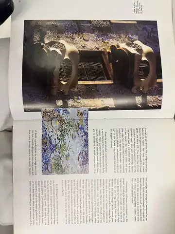
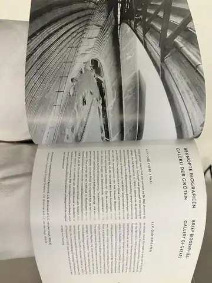

Three Books
After reading Borges' The Library of Babel, I checked out three books from the library and opened each one to a page.

Cardiff Bay Opera House
Hadid won the competition twice and it still never got built because the funding was pulled. The page shows the main idea: one continuous band of building wraps the edge of the site, and the halls hang off it facing inward. The book calls it an "inverted necklace." The middle stays open as a public courtyard.
The whole building comes from one simple idea. I want my eyewear project to work like that, where the band stays the same and the pieces on it change.

Casa Batlló
It started as a normal apartment building from 1877 that the owner wanted to tear down. Gaudí remodeled it instead. People read it as Saint George and the dragon: the roof is the dragon's back, the tower is the lance, and the balconies look like skulls, which is why it's called the House of Bones.
Once there's a story, every part has a reason to look the way it does. The bone balconies remind me of the mask I 3D printed.

De Kuip
"De Kuip" means "the tub." The stands wrap the field in one curved bowl on a steel frame. The upper tier is held from behind, so no columns block the view. Feyenoord still plays there. The same page has a short bio of J.J.P. Oud, who started in De Stijl and went on to design low-cost housing in Rotterdam.
The shape comes from what the fans need: to see the game and be close to it. I've played football my whole life, and that's how I want to design my wearable for athletes.